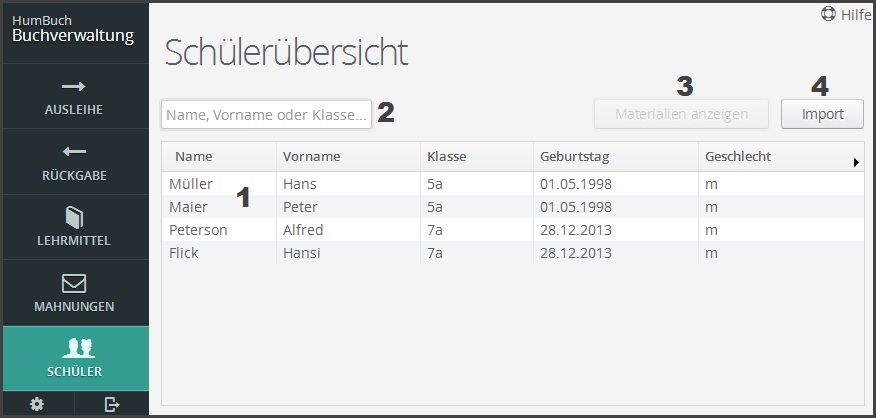

Wobei benötigen Sie Hilfe?
Grundlagen / Seitenaufbau

Abbildung 1
Die Tabelle dieser Seite (Abbildung 1 - Punkt 1) zeigt Ihnen alle Schüler die aktuell Lehrmittel geliehen haben. Bei der Auswahl eines Schülers können Sie die Funktion
"Materialien Anzeigen" (Abbildung 1 - Punkt 3) ausführen.
Mit Hilfe der Suche (Abbildung 1 - Punkt 2) können Sie die Tabelle nach Namen, Vornamen und Klassen filtern.
Funktionen
Mithilfe dieser Funktion (Abbildung 1 - Punkt 3) können Sie sich von Schülern ausgeliehene Materialien anzeigen lassen. Hierzu müssen Sie lediglich
vor ausführen der Funktion einen Schüler aus der Tabelle auswählen bzw. markieren.
Durch Klick auf diesen Button (Abbildung 1 - Punkt 4) öffnet sich der Windows Explorer, mit dem Sie eine Schülerdatenbank zum Import auswählen können.